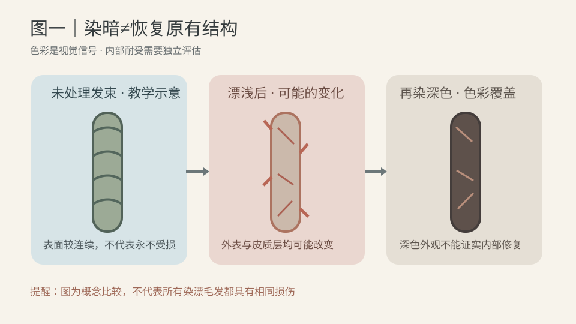
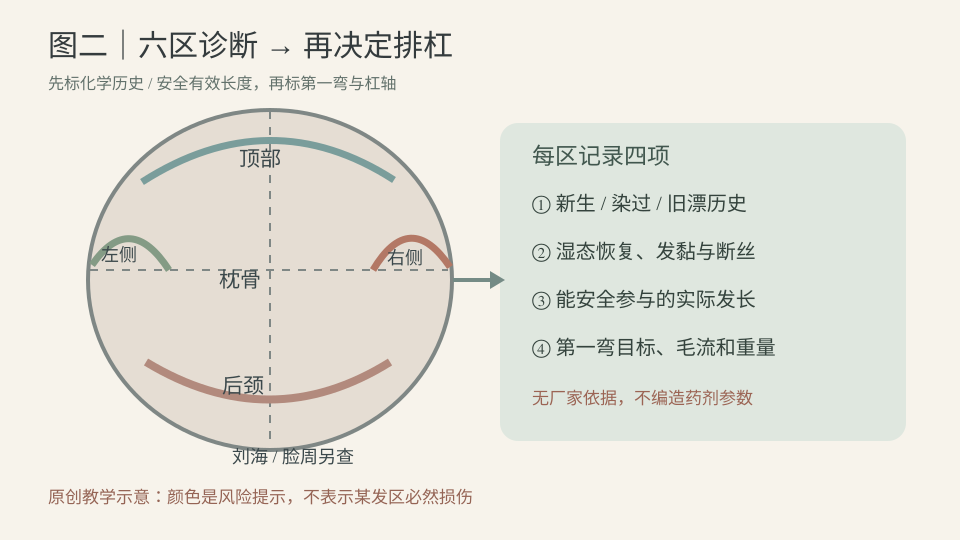
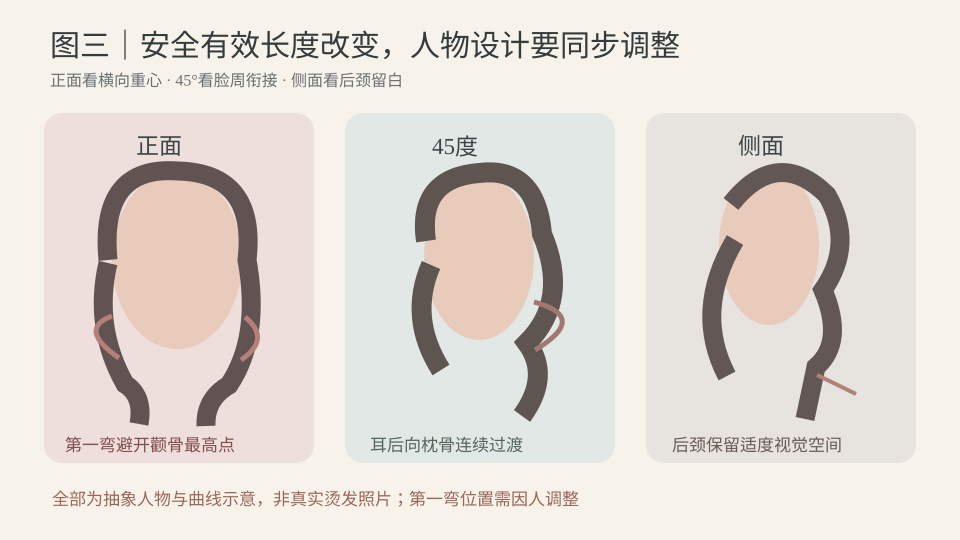

2026-11-05
【今日核心问题】顾客的头发以前漂浅、后来又染回深棕色，外观看起来接近健康黑发，为什么不能把它当作未经化学处理的头发选择烫发药剂？
【新增判断能力】区分“视觉颜色”“毛发表面状态”“皮质层结构与湿态恢复”三层证据；染暗只改变颜色表现，不能直接证明历史损伤被逆转。
【外层与内部】毛鳞片是毛干外部的重叠保护结构，影响摩擦、液体传递及外观；皮质层包含角蛋白中间丝与基质蛋白，是拉伸、弯曲和恢复的重要基础。二硫键是关键的共价交联，永久烫发通过合适还原与配套氧化改变部分交联；氢键对水敏感，参与湿发塑形与吹整后的暂时性维持；盐键/离子相互作用与疏水相互作用也参与角蛋白力学表现。不能把所有变化归因于二硫键。
【为何深色不代表恢复】漂浅主要处理毛发色素，但其氧化条件也可能影响毛鳞片、皮质层蛋白、脂质与二硫键等结构；后续氧化染深可能让视觉颜色均匀，不能据此推断损失的组织、化学结构和耐受都已恢复。不同人、不同漂染次数损伤程度并不相同；不能仅凭旧漂历史认定所有发尾必然禁止处理，也不能仅凭深色外观认定安全。尤其注意旧漂发尾“湿态异常伸长、恢复不良、发黏、断丝”属于停止进一步高风险处理并评估的信号。
【完整工艺中的各自角色】还原：在厂家允许条件下TGA/其他合适体系改变部分可接近的二硫键；pH、有效成分浓度、缓冲配方、温度、时间和既往化学历史都会影响反应，相同pH不是相同药力。CA如果是门店商品简称，要查真实成分而非按简称推断。水：改变部分氢键和角蛋白基质塑化；张力与杠径、发片厚度、圈数共同提供几何约束；热与时间在允许的热烫体系中影响水迁移、结构松弛和损伤风险；干燥和冷却改变暂时性相互作用与毛束外观；配套氧化参与部分交联重新形成，但不能恢复所有已氧化受损结构。材料学的玻璃化及结构松弛是解释分子运动的概念，实验室玻璃化相关温度不是设备设定温度。机器显示温度也不是毛发内部温度。
【决定成品的因素】卷度弹性和多洗后保持不只取决于药力，也受安全有效长度、发径与天然曲线、卷向、含水状态、完整氧化和打理影响。视觉深色与表面顺滑甚至可掩盖内部耐受不足；相反，单凭发尾颜色浅也不能精确测得断键率。把“软化60%”仅当门店经验描述，不当作二硫键断裂率。
【科研检索范围】优先查2026年10月29日—11月5日的新研究。本轮未核验到能够直接制定“漂后染深发尾真人安全热烫pH或分钟数”的高质量新对照试验；以下选用已核验的原始材料研究，不把厂商营销当独立效果证据。
【研究1｜漂浅后的外内结构】Kim、Oh、Chang，《Effects of excessive bleaching on hair: comparative analysis of external morphology and internal microstructure》，2024-12-17，Applied Microscopy，原始SEM/TEM研究，DOI 10.1186/s42649-024-00104-0。核心结论：在该过度漂色实验中，观察到毛鳞片损坏和皮质层内部变化。证据强度：中（直接显微观察，但样本与实验强度有限）。能支持：漂浅历史不能仅由发色判断毛干结构。不能证明：所有曾漂发尾都一样严重、染暗后绝无改善或任何统一真人热烫参数。
【研究2｜反复染色的累积影响】Kwon等，《Quantifying the effects of repeated dyeing: Morphological, mechanical, and chemical changes in human hair fibers》，在线发表于2024-09-12（正式卷期2024-09-30），Heliyon，原始AFM、FTIR、拉伸试验，DOI 10.1016/j.heliyon.2024.e37871。核心结论：在所研究的反复染色条件下，毛发表面纳米尺度变化随处理次数加重，机械和化学指标出现非线性变化。证据强度：中（仪器与对照具备，但特定配方、重复处理条件，且部分企业研发作者）。能支持：多次染色史应纳入区域判断。不能证明：染深次数本身就能推算每位顾客的损伤或统一药剂作用时长。
【研究3｜漂色氧化损伤的新指标】Takagi等，《Evaluation of Oxidative Hair Damage Caused by Ultraviolet Irradiation and Bleaching Using Short-Chain Aldehydes as an Index》，2026-04-20，Applied Cosmetic Science and Technology，原始离体毛束氧化/力学研究，DOI 10.69336/acst.2025-10。核心结论：在该实验下漂色及紫外线暴露与氧化相关指标和拉伸性能变化有关。证据强度：中偏弱（仪器证据但厂家参与、条件有限）。能支持：颜色处理与毛干材料性能应分开观察。不能证明：深染已经修复漂损、某款护理能保证烫发安全。
【证据分层】上述为科研材料证据；具体品牌厂家说明决定适用发质、禁忌、涂放顺序、冲洗、热与氧化步骤；专业教材规范分区观察语言；门店经验应按实际样本反复验证，不能超越厂家安全边界。
【模拟教学案例｜旧漂染暗的中长发顾客】以下人物、参考图和过程为虚构训练资料，没有真实客人、真实诊断或实际药剂操作。
34岁，职场知性偏自然浪漫；长椭圆偏方脸，额角略高、颧骨中等、下颌略方；顶部稍平、后枕已较圆、颈部偏短、肩中等宽。头发自然干底线在锁骨下约8厘米（仅模拟人物长度），既有低层次，下摆偏厚。顶部细软且密度中等；耳前密度偏低、发径中等；后枕较粗硬、发量多；后颈密度较高且毛流向右上；右耳后轻度天然外弯。习惯每两天洗发、偶尔湿发睡觉、经常夹板整理，日常希望五分钟内打理。
【化学地图】约8厘米新生区；中段一年内氧化染色两次；左耳后及下摆末端约4厘米曾漂浅、随后染回深棕；旧漂具体漂浅次数和配方不明。颜色近乎一致，但不把它当成同一发质。先问漂染烫发生过的日期、范围和日常热工具使用；按六区再细分长度，做适当低风险毛束观察。
【需求与参考图】顾客说“颜色现在看着挺好，想要自然、不要太卷，还显脸小，洗完不用怎么吹”。参考照片为向后柔C刘海、下颌稍下第一弯、锁骨附近舒展松S、后颈清爽，照片可能经过分束吹整。先区分自然干目标和五分钟轻吹目标，不保证复制图片。
【最大风险与停止】旧漂染暗段可能出现湿态异常伸长、弹性恢复不良、发黏或断丝。若观察到停止信号，应停止该段进一步化学/热处理，讨论修剪或无需化学处理的造型。若状态尚可，也不能仅凭一束样本推断整体安全；须用具体产品说明和人员现场评估。皮肤有明显刺激同样停止并处理。绝不在顾客头上进行高风险探索试验。
【剪裁与八步设计】①风格=职场知性加入浪漫；②人物=长椭圆偏方、平顶、短颈、左右毛流有别；③长度=以最终自然干底线和安全有效长度为准；④特点=顶部轻C、脸周柔弯、后颈留白；⑤层次=低至中低层次保守释放侧后重量，保留耳前密度与健康底线；⑥刘海=偏分弱C顺额角毛流；⑦卷度=下颌下第一弯、锁骨附近松S，旧漂段不安全则减少为单柔C；⑧打理=自然干与五分钟轻吹双状态说明。避免先做强烈双S再发现安全有效长度不足。
【药剂还原体系】先检查具体品牌、有效成分、许可发质、还原产品与热设备/氧化剂兼容性，明确新生/染后/旧漂各区是否允许接触。若厂家允许，可考虑其完整TGA热烫体系；若标注CA必须核对真实成分。由于无实际产品标签，此模拟不提供pH、浓度、额外药力分级、涂放顺序或作用分钟数；不会伪造“科学软化百分比”。实际程序以厂家说明与现场耐受为准，分区记录首次接触、规定观察与停止时刻。
【冲水与几何】按厂家规定充分冲水后，记录各区可见湿态“滴水/均匀湿润/局部偏干”（非精确含水率）。每区使用可平整贴杠的发片厚度，尾纸顺滑，不折返发尾；张力温和稳定，尤其不牵拉旧漂段。先标自然毛流、第一弯和安全底线，再选分区、杠轴、外径、提升角及圈数；相邻杠位与第一弯自然衔接，不规定同一圈数适用全头。
【加热、干燥与氧化】只执行真实兼容产品的温度/时间/干燥/冷却/氧化要求；热感或机器读数不代替毛发内部状态；任何灼热、异常粘连、断丝或刺激停止处理。不用补热补药修复疑似结构损伤。
【预期与补救】理想是顶部柔C、颧骨旁不过度膨、下颌以下第一弯、锁骨松S、后枕过渡自然、后颈清爽；分别展示自然干和轻吹。若下摆卷度不足先判断实际可烫发长、发尾处理史及卷绕几何，不直接加强还原；若安全长度不足，修剪并将目标改为更少弯度。
【正面】这位顾客脸略长而下颌稍方，顶部需要有限的柔和支撑，但不能一味增高而拉长视觉比例。颧骨最高处避免突然出现最大横向蓬松点；第一弯可放在下颌稍下，耳前发量少则保留覆盖密度。最明显松S不必与第一弯重合。
【45度】优先看脸周—耳后—枕骨的连续流向；右耳后有天然外弯，不能机械镜像强压。若左耳后旧漂段需要剪除，左右安全有效长度可能不同，应重新设计对称的视觉轮廓，而不是强求相同圈数。
【侧面】后枕本来较圆，补圆适度；颈部偏短，后颈不应叠加最重底线和最强卷度，保留适当留白。最大蓬松点、第一弯、最大卷度、底线位置分别画出来。
【人物变化】对于长颈窄肩可以适当保留侧后宽度；发量很少时不宜无限打薄；圆脸宽肩也不是一律高顶收边。风格判断来自线条、量感、人物气质和顾客审美，没有唯一脸型公式。
【三张原创轻量SVG，纯静态教学示意】
图1 原理图：染回深色与毛干耐受不是同一指标。看三个抽象发丝截面及箭头，先对比未经处理、漂浅可能改变、再次染深后的视觉覆盖；它不是实际显微结果，也不证明全部漂发相同。
图2 技术图：六区诊断卡。看顶部、两侧、枕骨、后颈、刘海/脸周的区域，沿箭头先记录化学历史、湿态异常、安全有效长度，再规划第一弯。箭头不表示真人药剂涂放顺序。
图3 美感图：正面看第一弯与颧骨位置，45度看耳后—枕骨过渡，侧面看后颈留白。虚构人物轮廓不是真实成品，也不能用于预测持久性。配色：暖米白底、深炭灰正文、雾蓝原理、灰绿技术、灰粉美感、陶土风险。



【限定】以下杠径和提升角只供公仔头无药剂、无加热的空间练习，外径单位毫米，角度以局部头皮切线为0°；不是经过真人安全验证的配方。所有发片用温和张力，按有效长度决定实际卷入圈数，不将“2.5圈”当作固定目标。
【顶部】外径练习候选30—34，提升角20—40°，自然柔C与有限发根高度；发根过度反向易炸根，夹具压在转折点易压根和折痕。检查自然分缝和杠位。
【枕骨】候选28—32，15—35°；本人物后枕已有圆度，偏向自然衔接而非再造大体积；发片厚叠与杠轴突变可能使第一弯断层。
【左右两侧】候选30—36，10—30°；目标下颌稍下第一弯，向锁骨松S过渡。左耳后旧漂段安全有效长度可能更短，可先无药试排再调整曲线数量；右侧天然外弯可以非镜像杠轴调整。尾纸包裹全部可安全卷入的发尾，避免尾翘和折返。
【后颈】可不卷，若示教轻C则0—15°，根向向右上，避免逆向牵拉和肩颈堆积；层次、发量与最强卷度位置一起观察。
【刘海脸周】依据额角毛流及有效长度选择弱C或不卷，细软碎发不靠强张力拔高。观察向前/后流向与颧骨和下颌的适配。
【七类纠错】压根→杠体与夹具压点；炸根→发根毛流/提升方向；折痕→尾纸、局部拉力/夹点；尾翘→安全尾段、卷入方向；断层→相邻第一弯高度；流向冲突→耳后杠轴；后颈堆积→层次重量与最强曲线落点。发现旧漂异常失弹时首先停止，而不是用更小杠、更强药水或更高温度补救。
【问顾客五题】①“现在深棕是直接染的，还是先漂浅再染回来的？主要在哪些长度？”②“你说自然，是洗完自然干想要松S，还是愿意每天轻吹五分钟？”③“不要太卷，是不喜欢小密卷，还是连第一弯都想很淡？”④“显脸小是想调整颧骨、下颌还是耳后和后颈？”⑤“如果旧漂发尾不适合再烫，可以接受修短或改成一条柔C吗？”
【模拟对话】顾客：“我已经染回深棕了，现在看着挺健康，直接做两道法式大S行吗？” 发型师：“先看你之前漂过的范围。染深让颜色更整齐，但不能直接说明发丝内部也恢复了。我们会按不同发区检查状态。” 顾客：“是不是加点护理就能像健康发一样烫？” 发型师：“护理可能改善部分表面手感，但不能保证恢复化学耐受。如果旧漂发尾有湿态失弹、发黏或断丝，我们就不强行把它烫进去。” 顾客：“可我想显脸小、自然，最好不打理。” 发型师：“我们先确认自然干长度和第一弯。你的脸周不需要在颧骨最宽的位置鼓起；如果安全长度不足两道S，可以改成一条柔弯。参考图经过整理，我们会说明自然干与轻吹的差异。”
【可复制话术】“我先看你的漂染历史，不只看现在的颜色。深色能改变视觉，却不等于旧漂结构完全恢复。我们会确认安全有效长度，再结合头、脸、肩、颈设计第一弯和大S；如果发尾不适合继续烫，就调整长度和弯度，不为了复制照片盲目加强药水。完成后让你比较自然干与五分钟轻吹的效果，也说清楚打理和持久性的取舍。”
【先练：观察与设计题】模拟公仔头同一把深棕色头发，A为未经漂色新生毛束，B为曾漂后染深末端，两者颜色接近；B湿态轻拉后出现明显伸长和回弹差。顾客参考图两道松S、要求锁骨长度及脸小。
Q1 能否凭深棕色判定A/B化学耐受相同？Q2 B有失弹时，能否通过减小杠径、加强还原或加热保证两道S？Q3 如果修掉B段后发长不足，如何重新设计？Q4 正面、45度、侧面各看什么？Q5 什么资料才能支持真人药剂pH与时间？
【参考答案与依据】1不能；染深改变光学颜色，无法逆推出皮质层的结构和力学状态，需要历史和现场判断。2不能；异常伸长恢复差是停止高风险处理的信号，增大药力/张力可能加重损伤。3先明确最终自然干目标长度，在可安全参与的发长内选择单条柔C、较低位第一弯或温和吹整，重新核对底线与层次，而非硬保两道S。4正面看颧骨/下颌与第一弯、最大横向体积；45度看脸周—耳后—枕骨连续性；侧面看顶部支撑、后枕圆度与后颈留白。5具体厂家完整标签、实际成分、适用发质及设备兼容说明，结合现场人员耐受评估，科研论文的实验条件不能直接变成门店真人配方。
【思考路径】化学历史地图→停止信号→安全有效长度→人物与参考图→八步设计→无药试排→仅采用厂家允许工艺→自然干/轻吹与多洗后复盘。不要死记发色等级等于受损等级。
【今日最值得拿到店里验证的1件事｜单变量离体毛束实验】只改变“同一浅色离体毛束是否临时用可洗深色造型粉着色”，验证肉眼观察到的色深改变是否会误导员工对发质历史的判断。此处深色造型粉为常温、无氧化剂、可洗去、无刺激的演示材料；不进行任何永久染发、漂色、还原、氧化或加热，绝不在顾客头上试验。实验不能证明所有染色产品的化学作用。
【目的与材料】同来源、同一次漂后处理史且已稳定干燥的离体毛束8束、无化学反应的可洗深色造型粉（先确认标签及材质兼容）、手套、白色背景板、固定手机支架、温湿度计、干态梳理工具、清水、记录卡。标记A/B各4束，保护皮肤与眼睛；若产品不适合实验就不做。
【唯一主动变量】A不着色，B只在外观用深色粉轻度覆盖；相同原始毛束来源、质量、有效长度、原有损伤、环境、拍摄灯光和拍摄角度。为防粉造成触感干扰，本实验只让员工依据照片判断“看上去是否像新生发”，不能把触感差异归因于颜色。
【步骤】①随机编号拍摄原始浅色毛束及历史卡；②B组在干态轻度覆盖可洗深色粉，A组保持不变；③统一灯光机位拍摄，邀请至少两位员工独立记录看到的色深和“是否会询问漂染史”的判断；④揭示全部毛束实际均为同一化学史；⑤按材料说明温和洗去可洗粉并统一自然干，24小时后再次拍摄比较；⑥可重复两轮，只评价外观与询问行为，记录未变化和分歧。
【空白记录】样本｜处理｜初始色深｜着色后色深｜是否询问漂史｜24小时洗去后｜备注
A01/A02/A03/A04｜不着色｜待测｜待测｜待记｜待测｜待记
B01/B02/B03/B04｜深色粉覆盖｜待测｜待测｜待记｜待测｜待记
【指标与转换】记录员工在只看图片时是否误把深色当健康新生发，作为沟通与诊断训练，不把外观测验当强度或二硫键试验。若多轮存在误判，在发质分析表固定增加“是否曾漂浅后染暗、范围与大约时间”的问项；没有误判也保留原始记录。不得据此决定真人药剂浓度、pH、软化终点、加热温度和氧化程序。实验尚未实施，结果全部待填写。
【今日结论卡】
一个原理：染深改变颜色外观，不能证明漂浅造成的毛鳞片与皮质层变化已恢复；化学历史与湿态耐受要独立判断。
一个错误：把深棕旧漂发尾当健康新生发，沿用同一药剂与强卷目标，出现异常失弹仍继续追加还原或热。
下次观察：在发质分析表逐区标记漂染史、湿态恢复与安全有效长度，再从正面、45度、侧面重新设计第一弯和后颈。